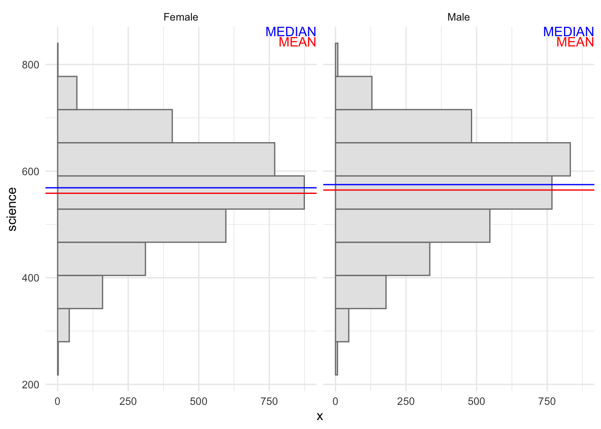

pacman::p_load(tidyverse, haven,
patchwork)Take-home Exercise 2: DataViz Makeover
1. Overview
In this take-home exercise, my goal is to apply what I have learned through the first two weeks of my Visual Analytics & Applications class such as different design practices and principles of DataViz and try to improve upon a fellow classmate’s data visualization in their Take-home Exercise 1 in both aesthetic and clarity.
2. Data Preparation
2.1 Installing R packages
In this take-home exercise, these R packages will be used:
The code chunk used is as follows:
2.2 Importing PISA data
The code chunk below uses read_sas() of haven to import PISA data into R environment.
stu_qqq <- read_sas("data/cy08msp_stu_qqq.sas7bdat")To retrieve only relevant data (Singapore-based), the filter argument is used as seen in the code chunk below.
stu_qqq_SG <- stu_qqq %>%
filter(CNT == "SGP")Then, the write_rds function will generate a new .rds file to be used for consequent EDAs.
write_rds(stu_qqq_SG,
"data/stu_qqq_SG.rds")stu_qqq_SG <-
read_rds("data/stu_qqq_SG.rds")2.3 Data Wrangling
Few columns will be selected to be used for the EDA, these are:
CNTSCHID (school_ID),
ST004D01T (gender: 1 being female, 2 being male),
PVxMATH (math: Average of 10 plausible values of student’s mathematic score),
PVxREAD (read: Average of 10 plausible values of student’s reading score),
PVxSCIE (scie: Average of 10 plausible value of student’s science score),
ESCS (escs: Value of socioeconomic standing).
Also, school_ID and gender variables are categorical in nature. These variables are casted as factors using as.factor(). For gender, the values are renamed to “Female” and “Male” for better readibility.
stu_data <- stu_qqq_SG %>%
select(CNTSCHID, ST004D01T, ESCS) %>%
rename(c(school_ID = "CNTSCHID",
gender = "ST004D01T",
escs = "ESCS"))
stu_data$school_ID <- as.factor(stu_data$school_ID)
stu_data$gender <- factor(stu_data$gender, levels = c(1, 2), labels = c("Female", "Male"))
stu_data$math <- rowMeans(stu_qqq_SG[, c("PV1MATH", "PV2MATH","PV3MATH", "PV4MATH", "PV5MATH",
"PV6MATH", "PV7MATH", "PV8MATH", "PV9MATH", "PV10MATH")],
na.rm = TRUE)
stu_data$read <- rowMeans(stu_qqq_SG[, c("PV1READ", "PV2READ","PV3READ", "PV4READ", "PV5READ",
"PV6READ", "PV7READ", "PV8READ", "PV9READ", "PV10READ")],
na.rm = TRUE)
stu_data$science <- rowMeans(stu_qqq_SG[, c("PV1SCIE", "PV2SCIE","PV3SCIE", "PV4SCIE", "PV5SCIE",
"PV6SCIE", "PV7SCIE", "PV8SCIE", "PV9SCIE", "PV10SCIE")],
na.rm = TRUE)2.4 Data Preview
str(stu_data)tibble [6,606 × 6] (S3: tbl_df/tbl/data.frame)
$ school_ID: Factor w/ 164 levels "70200001","70200002",..: 52 134 112 4 151 43 49 107 12 61 ...
$ gender : Factor w/ 2 levels "Female","Male": 1 2 2 2 1 1 2 2 1 2 ...
$ escs : num [1:6606] 0.1836 0.8261 -1.0357 -0.9606 0.0856 ...
..- attr(*, "label")= chr "Index of economic, social and cultural status"
$ math : num [1:6606] 605 690 677 401 436 ...
$ read : num [1:6606] 667 628 583 361 476 ...
$ science : num [1:6606] 640 672 660 344 479 ...stu_data[duplicated(stu_data),]# A tibble: 0 × 6
# ℹ 6 variables: school_ID <fct>, gender <fct>, escs <dbl>, math <dbl>,
# read <dbl>, science <dbl>No duplicated rows are found.
sum(is.na(stu_data))[1] 4747 NA responses are detected. Using the summary() function, the columns with NA responses can be ascertained.
summary(stu_data) school_ID gender escs math
70200020: 60 Female:3248 Min. :-3.5488 Min. :262.6
70200075: 60 Male :3358 1st Qu.:-0.2327 1st Qu.:506.2
70200159: 59 Median : 0.4817 Median :582.4
70200013: 58 Mean : 0.2904 Mean :574.0
70200045: 58 3rd Qu.: 0.9036 3rd Qu.:648.4
70200066: 58 Max. : 3.2780 Max. :842.7
(Other) :6253 NA's :47
read science
Min. :158.6 Min. :242.0
1st Qu.:477.4 1st Qu.:498.9
Median :553.6 Median :571.2
Mean :542.5 Mean :561.0
3rd Qu.:616.1 3rd Qu.:629.3
Max. :797.6 Max. :801.9
All 47 NA responses are found in the escs column. Let’s remove those from our subsequent analysis.
stu_data <- stu_data[!is.na(stu_data$escs), ]The data is now ready to be utilized.
3. DataViz Makeover
3.1 Distribution of students’ performance
Show code
p1 <- ggplot(data = stu_data,
aes(y = math)) +
geom_violin(aes(x=0)) +
geom_boxplot()+
stat_boxplot(geom = "errorbar", width = 0.05) +
stat_summary(aes(x = 0),
geom = "point",
fun.y = "mean",
colour = "red",
size = 1) +
scale_y_continuous(NULL, limits = c(0,1000)) +
scale_x_continuous("MATH GRADES", breaks = NULL) +
theme_minimal()
p2 <- ggplot(data = stu_data,
aes(y = science)) +
geom_violin(aes(x=0)) +
geom_boxplot()+
stat_boxplot(geom = "errorbar", width = 0.05) +
stat_summary(aes(x = 0),
geom = "point",
fun.y = "mean",
colour = "red",
size = 1) +
scale_y_continuous(NULL, limits = c(0,1000)) +
scale_x_continuous("SCIENCE GRADES", breaks = NULL) +
theme_minimal()
p3 <- ggplot(data = stu_data,
aes(y = read)) +
geom_violin(aes(x=0)) +
geom_boxplot() +
stat_boxplot(geom = "errorbar", width = 0.05) +
stat_summary(aes(x = 0),
geom = "point",
fun.y = "mean",
colour = "red",
size = 1) +
scale_y_continuous(NULL, limits = c(0,1000)) +
scale_x_continuous("READING GRADES", breaks = NULL) +
theme_minimal()
p1|p2|p33.2 Visualizing student performance in relation to gender
Show code
stats <- data.frame(gender = as.factor(c('Female','Male')),
mean = c(mean(stu_data$math[stu_data$gender == "Female"]),
mean(stu_data$math[stu_data$gender == "Male"])),
median = c(median(stu_data$math[stu_data$gender == "Female"]),
median(stu_data$math[stu_data$gender == "Male"])) )
ggplot(data = stu_data,
aes(y = math)) +
geom_histogram(bins = 10,
color = 'grey50',
fill = 'grey90') +
facet_wrap(~ gender) +
geom_hline(data = stats,
mapping = aes(yintercept=mean),
color = "red") +
geom_hline(data = stats,
mapping = aes(yintercept=median),
color = "blue") +
annotate(
'text',
x = Inf,
y = Inf,
hjust = 1,
vjust = 2.1,
label = paste("MEAN"),
color = "red"
) +
annotate(
'text',
x = Inf,
y = Inf,
hjust = 1,
vjust = 1,
label = paste("MEDIAN"),
color = "blue"
) +
theme_minimal()Show code
stats <- data.frame(gender = as.factor(c('Female','Male')),
mean = c(mean(stu_data$science[stu_data$gender == "Female"]),
mean(stu_data$science[stu_data$gender == "Male"])),
median = c(median(stu_data$science[stu_data$gender == "Female"]),
median(stu_data$science[stu_data$gender == "Male"])) )
ggplot(data = stu_data,
aes(y = science)) +
geom_histogram(bins = 10,
color = 'grey50',
fill = 'grey90') +
facet_wrap(~ gender) +
geom_hline(data = stats,
mapping = aes(yintercept=mean),
color = "red") +
geom_hline(data = stats,
mapping = aes(yintercept=median),
color = "blue") +
annotate(
'text',
x = Inf,
y = Inf,
hjust = 1,
vjust = 2.1,
label = paste("MEAN"),
color = "red"
) +
annotate(
'text',
x = Inf,
y = Inf,
hjust = 1,
vjust = 1,
label = paste("MEDIAN"),
color = "blue"
) +
theme_minimal()Show code
stats <- data.frame(gender = as.factor(c('Female','Male')),
mean = c(mean(stu_data$read[stu_data$gender == "Female"]),
mean(stu_data$read[stu_data$gender == "Male"])),
median = c(median(stu_data$read[stu_data$gender == "Female"]),
median(stu_data$read[stu_data$gender == "Male"])) )
ggplot(data = stu_data,
aes(y = read)) +
geom_histogram(bins = 10,
color = 'grey50',
fill = 'grey90') +
facet_wrap(~ gender) +
geom_hline(data = stats,
mapping = aes(yintercept=mean),
color = "red") +
geom_hline(data = stats,
mapping = aes(yintercept=median),
color = "blue") +
annotate(
'text',
x = Inf,
y = Inf,
hjust = 1,
vjust = 2.1,
label = paste("MEAN"),
color = "red"
) +
annotate(
'text',
x = Inf,
y = Inf,
hjust = 1,
vjust = 1,
label = paste("MEDIAN"),
color = "blue"
) +
theme_minimal()
3.3 Visualizing student performance in relation to their enrolled school
average_math_SG <- mean(stu_data$math)
average_scie_SG <- mean(stu_data$science)
average_read_SG <- mean(stu_data$read)
stu_qqq_sch <- stu_data %>%
group_by(school_ID) %>%
mutate(average_math_diff = abs(mean(math)-average_math_SG),
average_science_diff = abs(mean(science)-average_scie_SG),
average_read_diff = abs(mean(read)-average_read_SG)) %>%
select(school_ID, average_math_diff, average_science_diff, average_read_diff) %>%
unique() Show code
p1 <- ggplot(data = stu_qqq_sch,
aes(y = average_math_diff)) +
geom_boxplot(width = 0.1) +
stat_boxplot(geom = "errorbar", width = 0.05) +
stat_summary(aes(x = 0),
geom = "point",
fun.y = "mean",
colour = "red",
size = 1) +
scale_y_continuous(NULL, limits = c(0,220)) +
scale_x_continuous("math avg grade diff", breaks = NULL) +
theme_minimal()
p2 <- ggplot(data = stu_qqq_sch,
aes(y = average_science_diff)) +
geom_boxplot(width = 0.1) +
stat_boxplot(geom = "errorbar", width = 0.05) +
stat_summary(aes(x = 0),
geom = "point",
fun.y ="mean",
colour ="red",
size=1) +
scale_y_continuous(NULL, limits = c(0,220)) +
scale_x_continuous("science avg grade diff", breaks = NULL) +
theme_minimal()
p3 <- ggplot(data = stu_qqq_sch,
aes(y = average_read_diff)) +
geom_boxplot(width = 0.1) +
stat_boxplot(geom = "errorbar", width = 0.05) +
stat_summary(aes(x = 0),
geom = "point",
fun.y ="mean",
colour ="red",
size=1) +
scale_y_continuous(NULL, limits = c(0,220)) +
scale_x_continuous("reading avg grade diff", breaks = NULL) +
theme_minimal()
p1|p2|p33.4 Visualizing student performance in relation to socioeconomic status
Show code
ggplot(data = stu_data,
aes(y = escs)) +
geom_violin(aes(x = 0))+
geom_boxplot()+
stat_summary(geom = 'point',
fun = 'mean',
aes(x = 0),
color = 'red') +
scale_y_continuous(NULL) +
scale_x_continuous('Social Economic Standing', breaks = NULL) +
theme_minimal()Show code
cor1 <- round(cor(stu_data$math, stu_data$escs),2)
cor2 <- round(cor(stu_data$science, stu_data$escs),2)
cor3 <- round(cor(stu_data$read, stu_data$escs),2)
p1 <- ggplot(data = stu_data,
aes(y = math, x = escs)) +
geom_point(size = 0.1)+
geom_smooth(method = lm) +
annotate("text", x = 2.5, y = 600, label=paste0("r = ", cor1), color = 'blue') +
theme_minimal()
p2 <- ggplot(data = stu_data,
aes(y = science, x = escs)) +
geom_point(size = 0.1)+
geom_smooth(method = lm) +
annotate("text", x = 2.5, y = 600, label=paste0("r = ", cor2), color = 'blue') +
theme_minimal()
p3 <- ggplot(data = stu_data,
aes(y = read, x = escs)) +
geom_point(size = 0.1)+
geom_smooth(method = lm) +
annotate("text", x = 2.5, y = 600, label=paste0("r = ", cor3), color = 'blue') +
theme_minimal()
p1/p2/p3